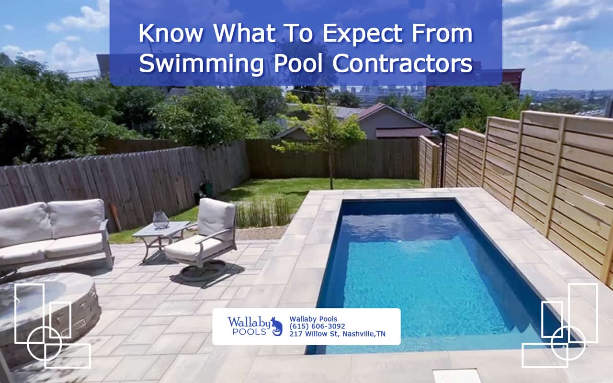

What to Know About Pool Safety in Different Weather Conditions
Pool Excavation
These audits typically involve inspecting the pool's physical barriers, drain covers, filtration systems, and water chemistry. For commercial pools or those used by large groups, having an AED (automated external defibrillator) on hand can be life-saving. Solar-powered lights are energy-efficient and eco-friendly, making them an appealing choice for environmentally conscious homeowners.
Comfortable lounge chairs, shade-providing umbrellas, and a sturdy dining set create inviting spaces for relaxation and entertaining. "Some of the most common pool problems include cloudy water, algae growth, and equipment malfunctions.
Energy-efficient equipment, like variable-speed pumps and heat pumps, not only reduce operating costs but also lower your pool's environmental impact. "Regular pool inspections are crucial for maintaining a safe and functional swimming environment.
Key questions include: “How long have you been in business?” Best pool installer nashville TN. “Are you licensed and insured?” “Can you provide references from previous clients?” “What is your estimated timeline for this project?” “How do you handle unexpected issues or changes in the design?” Best nashville pool builders TN. These questions help ensure that the contractor has the necessary expertise, communicates effectively, and can adapt to challenges, giving you confidence that the project will be completed successfully." Accounting for these costs early in the planning process helps avoid unexpected financial surprises."
What to Know About Pool Safety in Different Weather Conditions - Plaster Finishing
Salt Chlorinators
Saltwater Generators
Jacuzzi Jets
Leaf Nets & Skimmers
Artificial Grass Surroundings
Pool Builders
Concrete Pools
Why Professional Pool Maintenance Is Worth Considering —
By following these maintenance steps, homeowners can enjoy a clean, energy-efficient pool that remains gentle on the environment." "Pool covers are a simple yet effective tool for maintaining water quality. Start by verifying that your pool's fencing, gates, and covers comply with height and material standards.
Vinyl-lined pools, while more affordable initially, require periodic liner replacements and offer fewer customization options. Start by selecting a suitable site-level ground with good drainage is essential.
Experienced contractors provide detailed estimates, break down costs for each phase of the project, and suggest cost-effective materials and designs. They understand the nuances of different construction methods, materials, and local regulations, which helps ensure a smoother, faster, and more cost-effective process. best pool contractor Nashville,TN.
"Pool contractors play a crucial role in both residential and commercial pool construction, but their responsibilities differ significantly. A sunny spot ensures warm water and less energy use for heating, while positioning the pool away from large trees reduces debris and maintenance.
What to Know About Pool Safety in Different Weather Conditions - Skimmers & Drains
"Hiring a contractor who specializes in pool construction ensures that the project is completed to industry standards and that all necessary safety measures are in place. Keeping the pump's motor and seals in good condition by inspecting them periodically and lubricating O-rings will help prevent costly repairs. Reputable contractors often provide workmanship warranties alongside manufacturer guarantees on equipment and materials.
Another option is installing a new liner if you have a vinyl pool, which can give it a fresh, clean appearance. Start by examining the pool's surface for cracks, tears, or loose tiles, and address any issues as soon as they appear.
Additionally, consider the long-term maintenance requirements of your chosen materials and equipment, as well as any local building codes or permit requirements. best pool company Nashville TN. Start by thoroughly cleaning the pool and balancing the water chemistry before closing it.
"Tailoring pool maintenance to residential or commercial needs involves adjusting the frequency, complexity, and scope of care.
What to Know About Pool Safety in Different Weather Conditions - Pool Coping
Pool Excavation
Plaster Finishing
Pool Coping
Outdoor Furniture
Skimmers & Drains
Liability Insurance
By taking care of your pool cover, you'll protect your pool and make maintenance easier year-round."
What to Look for in a Pool Contractor
The concrete is then sprayed or poured into place, allowed to cure, and finished with a surface material like plaster or tile. "Opting for sustainable materials in pool construction helps reduce environmental impact and promotes long-term durability. Equipment warranties typically cover pumps, filters, heaters, and automation systems, ensuring that manufacturer defects are repaired or replaced at no cost.
"Regular safety audits are essential for identifying potential hazards and ensuring ongoing compliance with local and national safety standards. "Adding a pool deck during a renovation creates a more functional and visually appealing outdoor space.
Professionals have the tools and experience needed to diagnose complex problems, perform advanced repairs, and ensure your pool is safe and properly functioning. This added layer of protection ensures that your pool remains in top condition, extending its lifespan and preserving its value for years to come."
"Installing an energy-efficient pool heater involves selecting the right model, such as a heat pump or solar-powered unit, and ensuring proper placement and setup. Variable-speed pumps adjust their speed according to the pool's needs, conserving electricity and extending the life of the equipment.
What to Know About Pool Safety in Different Weather Conditions - Pool Coping
Pool Fencing
Ozone Pool Systems
Warranty & Service Contracts
Home Equity Loans for Pools
Pool Ladders & Steps
Plumbing & Electrical Work
Why Pool Contractors Can Help with Budget Management
By taking a few minutes to register your warranty online, you gain peace of mind knowing that your investment is protected and that support is readily available when needed. Reputable contractors stand by their work and are willing to address problems promptly. It's important to understand the terms, including the warranty duration, what is excluded, and who to contact for repairs.
Start by contacting the contractor or manufacturer and providing documentation such as the original invoice, warranty agreement, and photos of the problem. Consider the shape and depth as well, ensuring the pool is functional for all intended activities, from swimming laps to relaxing on a tanning ledge.
By planning a design that aligns with your landscape, you'll achieve a harmonious and visually appealing outdoor retreat." Many manufacturers and contractors require registration to activate the warranty, ensuring that you're covered from the start.
Adding native, drought-resistant plants around the pool helps manage runoff and prevents erosion. Start by maintaining proper water chemistry-imbalanced pH or chlorine levels can cause fading, wrinkles, or damage over time.

Selecting Pool Features for Residential and Commercial Pools
Once the old surface is stripped away, the pool's structure is thoroughly cleaned and prepped. High-efficiency pumps, heaters, and LED lighting use less energy, resulting in lower utility bills. "Incorporating waterfalls and fountains into your pool design not only enhances the aesthetic appeal but also improves the overall ambiance of your outdoor space.
Routine tasks such as skimming debris, vacuuming, and brushing the walls prevent buildup and maintain water clarity. "Building an in-ground pool is a significant investment, so it's crucial to carefully evaluate several factors before getting started.
During peak swimming season, skimming, vacuuming, and balancing water chemistry should be done regularly. A diverse, well-documented portfolio provides reassurance that the contractor can deliver the results you're looking for."
By staying consistent and using efficient systems, homeowners can keep their pool maintenance costs under control while extending the pool's lifespan." To assess this reputation, start by reading online reviews on trusted platforms, such as Google, Yelp, and the Better Business Bureau.
Why Pool Cover Maintenance Matters
Avoid using abrasive cleaning tools or harsh chemicals that may harm the liner. The final step includes filling the pool with water and balancing the chemicals. Material options like concrete, fiberglass, or vinyl each have their own costs and maintenance requirements.
Failing to keep the water chemistry balanced, skipping regular equipment inspections, or using non-approved parts can void the warranty. Reviewing the terms carefully and following recommended maintenance procedures ensures that you'll have coverage when it's truly needed."
"Energy-efficient pools often come with higher upfront costs due to advanced equipment, such as variable-speed pumps or solar heaters, but they offer substantial savings in the long run.
What to Know About Pool Safety in Different Weather Conditions - Pool Excavation
Energy-efficient Pool Equipment
Natural Pools
Rebar Reinforcement
Pool Covers
Outdoor Fire Pits
Highlighting a valid pool warranty in your home listing demonstrates that the pool has been well-maintained and professionally cared for."
Content"Finding a reliable pool installer in Nashville is crucial for ensuring your backyard oasis is built to last. Consider adding a waterfall or a swim-up bar for a touch of elegance and convenience.
A 5-seat hot tub with a cast acrylic shell, supported by a frame structure, showing vents for water circulation and massageOutdoor hot tubs
A hot tub is a large tub full of water used for hydrotherapy, relaxation or pleasure. Some have powerful jets for massage purposes. Hot tubs are sometimes also known as "spas" or by the trade name Jacuzzi.[1] Hot tubs may be located outdoors or indoors.
In contrast to a typical bathtub, a hot tub is designed to be used by more than one person at a time, with many models accommodating four or more people. Unlike baths, soaps and shampoos are not used in wet-jetted hot tubs (although they can be used in air-jetted hot tubs). Home hot tubs are often closer in construction to standard bathtubs, while the construction of a public hot tub often has more in common with a swimming pool, of which it can be considered a type.
The earliest hot tubs were calderas in which hot stones were placed to heat the water.[citation needed]Therma in Ikaria has been a very popular place particularly for hydrotherapy ever since the 4th century B.C.[2] The remains of wrecked marble bathtubs along with a prehistoric aqueduct that have been unearthed from this area bear ample testimony of the place's popularity in the ancient times.[2]
In 737 A.D., Japan's first onsen opened near Izumo, Shimane, and centuries later, the first ryokan (inns) were built, offering food, accommodations, and soaking tubs called ofuro.
In ancient Rome, there were three types of baths: Baths at home (balnea), private baths (balnea privata), and public baths (balnea publica). The practice of bathing was so engrained that the Roman legions, during their long occupations in foreign lands, built their own baths at mineral and thermal springs in the newly conquered lands. Examples are found all over Europe.[3]
In the 1940s, hot tubs began to appear in the US, inspired by the Japanese ofuro. Hydrotherapy pumps were introduced by Jacuzzi. Fiberglass shell hot tubs appeared around 1970 and were soon superseded by cast acrylic shells.
A filtration system: the plumbing has to incorporate a filter system to help clean the water. Some models use a separate small 24/7 filter pump while others use programmed settings of the main pumps.
Induced air: The jets may use a venturi effect to incorporate air into the water stream for a lighter massage effect; this requires another set of hoses.
Some models use an air blower to force air through a separate set of jets for a different "bubbly" massage effect; this is a separate system from the induced air.
An ozone system: ozonation is a common adjunct to water maintenance, and if installed will have its own set of hoses and fittings.
Hot tubs are usually heated using an electric or natural gas heater, though there are also submersible wood fire hot tub heaters, as well as solar hot water systems. Hot tubs are also found at natural hot springs; in this case, the water may be dangerously hot and must be combined with cool water for a safe soaking temperature.
Effective insulation greatly improves the energy efficiency of a hot tub. There are several different styles of hot tub insulation: some manufacturers fill the entire cabinet with foam, while others insulate the underside of the shell, the inside of the cabinet, or both. Many manufacturers advertise the superiority of their approach to insulation, but few independent side-by-side comparisons are available. The hot tub pump and hot tub heater represent most of the power consumption in a hot tub and vary in use of power depending on their size.[4]
In 2019 an update to the ANSI standard for energy efficiency was approved. For the first time, this new standard increases the minimum energy efficiency level for portable spas and inflatable spas.[9][10] Hot tub covers have been shown to reduce most of the evaporative losses from the pool when not in use. With this component of heat loss being 70%,[11] a cover with even a small R-value is able to achieve as much as a 75% reduction in heating costs when used as opposed to leaving the water surface exposed.[12]
There are several different types of spa covers. Some covers are better for insulation and therefore are lighter on internal parts and energy efficiency. Some examples of covers are insulated, aluminum, rolling, or a tonneau.[citation needed]
Since some hot tubs are not drained after each use it is necessary to treat the water to keep it attractive and safe. It must be neither too alkaline nor too acidic, and must be sanitised to stay free of harmful microorganisms. Partly due to their high water temperatures, hot tubs can pose particular health risks if not regularly maintained: outbreaks of Legionnaires' Disease have been traced to poorly sanitized hot tubs.[13] Typically chlorine or bromine are used as sanitizers, but salt water chlorination is starting to become more common.
Sanitation can also be aided by a non-chemical ozonator.
For aesthetic reasons, and for the sanitizer to work properly, water should be neither too alkaline nor too acidic (low pH). The hardness level of the water, measured as the amount of dissolved calcium, is also important. Insufficient hardness can lead to corrosion and water foaming. The ideal range of calcium hardness levels in a hot tub or spa water should be between 150 and 250 ppm (parts per million)[citation needed]
Portable vinyl-liner hot tub: these are cheaper and smaller, and require less power, e.g. 110–120 V 15 A household power circuits in North America.[citation needed]
Roto-molded hot tubs are constructed with the shell and surrounding cabinet as a single piece. They have molded seating.[14]
Acrylic: these hot tubs have a cast acrylic shell, supported by a frame structure, and are usually surrounded by a skirt of either cedar or simulated wood-grain plastic. They typically can seat two to seven persons or more.[citation needed][15]
Cement: hot tubs can also be built of cement, above-ground, or in-ground like a small swimming pool.[citation needed]
Wooden hot tubs: round wooden hot tubs peaked in popularity in the 1970s, having now been replaced by modern construction methods. Wooden hot tubs are often made of redwood or cedar and assembled from vertical staves and the structure is held together like wooden barrels, with metal bands.[14]
Stainless steel hot tubs can be made in any shape and size and are extremely durable.[16]
Fiberglass hot tub: glass-reinforced polyester (GRP) hot tubs are made of a plastic matrix reinforced by fine fibers of glass.[citation needed]
Inflatable PVC hot tubs. An inflatable hot tub is an air-filled spa structure. Air is pumped into a vinyl skin that expands and creates a solid form. Most commonly round in shape.[17][18]
Sitting in water above normal body temperatures can cause drowsiness which may lead to unconsciousness and subsequently result in drowning. The U.S. Consumer Product Safety Commission (CPSC) recommends that water temperatures never exceed 40 degrees Celsius (104 °F). A temperature of 37 degrees Celsius (100 °F) is considered safe for a healthy adult. Soaking in water above 39 degrees Celsius (102 °F) can cause fetal damage during the first three months of pregnancy.[19]
It is also recommended to install residual-current devices for protection against electrocution. The greater danger associated with electrical shock in the water is that the person may be rendered immobile and unable to rescue themselves or to call for help and then drown.[20]
Hot tubs and spas are equipped with drains that can create powerful suction and between 1980 and 1996, the CPSC had reports of more than 700 deaths in spas and hot tubs, about one-third of which were drownings to children under age five. In the same period 18 incidents were reported to the CPSC involving body part entrapment. To reduce the risk of entrapment, US safety standards require that each spa have two drains for each pump, reducing the amount of suction.[21] From 1999 to 2007 there were 26 reports to the CPSC concerning circulation entrapments hot tubs and spas, including three deaths.[22]
In 2001[23] and in 2012[24] the CPSC issued recalls for spa heaters which overheated and caused fires.
^Bob Barton (August 2016), "Recent Work on the Design and Construction of Air Inflated Structures", Procedia Engineering, 155, Science Direct: 47–60, doi:10.1016/j.proeng.2016.08.006
The presence of chlorine in traditional swimming pools can be described as a combination of free available chlorine (FAC) and combined available chlorine (CAC).[1] While FAC is composed of the free chlorine that is available for disinfecting the water, the CAC includes chloramines, which are formed by the reaction of FAC with amines (introduced into the pool by human perspiration, saliva, mucus, urine, and other biologics, and by insects and other pests).[2] Chloramines are responsible for the "chlorine smell" of pools, as well as skin and eye irritation. These problems are the result of insufficient levels of free available chlorine, and indicate a pool that must be "shocked" by the addition of 5–10 times the normal amount of chlorine.[1] In saltwater pools, the generator uses electrolysis to continuously produce free chlorine. As such, a saltwater pool or hot tub is not actually chlorine-free; it simply utilizes added salt and a chlorine generator instead of direct addition of chlorine. It also burns off chloramines in the same manner as traditional shock (oxidizer). As with traditionally chlorinated pools, saltwater pools must be monitored in order to maintain proper water chemistry. Low chlorine levels can be caused by insufficient salt, incorrect (low) chlorine-generation setting on the SWG unit, higher-than-normal chlorine demand, low stabilizer, sun exposure, insufficient pump speed, or mechanical issues with the chlorine generator. Salt count can be lowered due to splash-out, backwashing, and dilution via rainwater.
Research has shown that because saltwater pools still use chlorine sanitization, they generate the same disinfection byproducts (DBPs) that are present in traditional pools. Of highest concern are haloketones and trihalomethanes (THMs) of those the predominant form being bromoform. Very high levels of bromoform—up to 1.3 mg per liter, or 13 times the World Health Organization's guideline values—have been found in some public saltwater swimming pools.[3]
Manufacturers have been producing saltwater chlorine generators in the United States since the early 1980s, and they first appeared commercially in New Zealand in the early 1970s (the Aquatech IG4500).[4]
The chlorinator cell consists of parallel titanium plates coated with ruthenium and sometimes iridium. Older models make use of perforated (or mesh) plates rather than solid plates. Electrolysis naturally attracts calcium and other minerals to the plates. Thus, depending on water chemistry and magnitude of use, the cell will require periodic cleaning in a mild acid solution (1 part HCl to 15 parts water) which will remove the buildup of calcium compound crystals, such as calcium carbonate or calcium nitrate. Excessive buildup can reduce the effectiveness of the cell. Running the chlorinator for long periods with insufficient salt in the pool can strip the coating off the cell which then requires an expensive[clarification needed] replacement, as can using too strong an acid wash.
Saltwater pools can also require stabilizer (cyanuric acid) to help stop the sun's UV rays from breaking down free chlorine in the pool. Usual levels are 20–50 ppm. They also require the pH to be kept between 7.2 and 7.8 with the chlorine being more effective if the pH is kept closer to 7.2. The average salt levels are usually in the 3000-5000 ppm range, much less than the ocean, which has salt levels of around 35,000 ppm.[5] In swimming pools, salt is typically poured across the bottom and swept with the pool brush until it dissolves; if concentrated brine is allowed into the return-water system it can cause the chlorinator cell to malfunction due to overconductivity.
Salt water chlorination produces an excess of hydroxide ions, and this requires the frequent addition of hydrochloric acid (HCl, also known as muriatic acid) to maintain pH.[6]
The benefits of salt systems in pools are the convenience and the constant delivery of pure chlorine-based sanitizer. The reduction of irritating chloramines versus traditional chlorinating methods and the "softening" effect of electrolysis reducing dissolved alkali minerals in the water are also perceived as benefits. For some people that have sensitivities to chlorine, these systems may be less offensive.
Disadvantages are the initial cost of the system, maintenance, and the cost of replacement cells. Salt is corrosive and will damage some metals and some improperly-sealed stone. However, as the ideal saline concentration of a salt-chlorinated pool is very low (<3,500ppm, the threshold for human perception of salt by taste; seawater is about ten times this concentration), damage usually occurs due to improperly-maintained pool chemistry or improper maintenance of the electrolytic cell. Pool equipment manufacturers typically will not warrant stainless steel products damaged by saline pools. Calcium and other alkali precipitate buildup will occur naturally on the cathode plate, and sometimes in the pool itself as "scaling". Regular maintenance of the cell is necessary; failure to do so will reduce the effectiveness of the cell. Certain designs of saline chlorinators use a "reverse-polarity" method that will regularly switch the roles of the two electrodes between anode and cathode, causing this calcium buildup to dissolve off the accumulating electrode. Such systems reduce but do not eliminate the need to clean the electrolytic cell and the occurrence of calcium scale in the water.
As chlorine is generated, pH will rise causing the chlorine to be less effective. Many systems with chemistry automation can sense the rising pH and automatically introduce either CO2 or hydrochloric acid in order to bring the pH back to the target level.Automation systems will also manage levels of sanitizer by monitoring the ORP or redox levels of the water. This allows only the needed amount of chlorine to be generated based on the demand.
Sodium bromide can be used instead of sodium chloride, which produces a bromine pool. The benefits and downsides are the same as those of a salt system. It is not necessary to use a chloride-based acid to balance the pH. Also, bromine is only effective as a sanitizer, not as an oxidizer, leaving a need for adding a "shock" such as hydrogen peroxide or any chlorine-based shock to burn off inorganic waste and free up combined bromines. This extra step is not needed in a sodium chloride system, as chlorine is effective as both a sanitizer and an oxidizer. A user would only need to "super chlorinate" or increase chlorine production of the cell occasionally. That would normally be less than once a week or after heavy bather loads.
^ ab
David Short, Fran J. Donegan (2012). Pools and Spas: Planning, Designing, Maintaining, Landscaping. Upper Saddle River, NJ: Creative Homeowner. p. 239. ISBN978-1-58011-391-5.
They do an outstanding job installing beautiful pools and transforming backyards. Winston is exceptional, his communication is top-notch, and he ensures every detail is perfect. Highly recommend!
Winston Farzan has done excellent work for me several times. He's been able to tackle many different jobs at once. I save jobs for him knowing that I can depend on his expertise!
Awesome. I watched a small backyard turn into a backyard oasis. The other options for a smaller pool were either fiberglass or refurbished containers. This is an actual concrete pool with automation. Looks great and I love it!
What's the average cost of a fiberglass pool in Nashville?
The price depends on the size, shape, and features, but fiberglass pools in Nashville generally start around $35,000 and can go up depending on customization and installation complexity.
How can I find a reliable pool builder in Nashville?
Look for a builder with a strong local reputation, verified licensing, and positive customer reviews. Request a detailed estimate, timeline, and references to ensure you�re working with a reputable professional.
What does a pool contractor do?
A pool contractor manages the design, construction, and installation of swimming pools. They handle permits, oversee subcontractors, and ensure the project meets local building codes and safety standards.
What are the advantages of adding a deck to a pool?
A deck creates a functional and attractive space for lounging, entertaining, and easier pool access. It also enhances safety by providing a secure, slip-resistant surface around the pool.
How long does a pool installation take in Nashville?
The timeline depends on the pool type. Fiberglass pools can be installed in as little as a few weeks, while concrete pools may take several months. A reliable contractor will provide a clear schedule.
What is a dip pool, and why is it popular in Nashville?
A dip pool is a small, shallow pool designed for cooling off and relaxing. In Nashville, they�re popular due to their compact size, lower maintenance requirements, and ability to fit into smaller outdoor spaces.